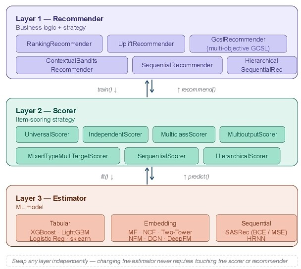
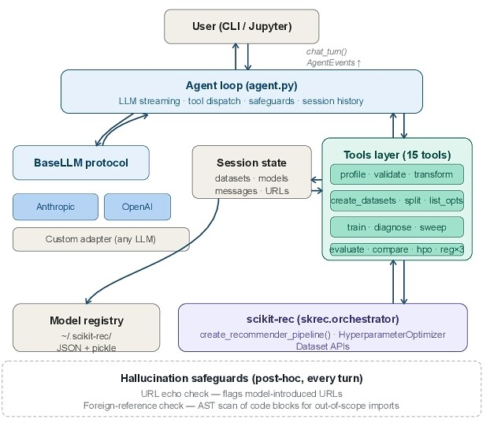

scikit-rec: A Unified, Extensible Recommendation Library with scikit-rec-agent, a Conversational Interface
推荐团队做排序、contextual bandit、uplift、序列推荐时往往各用一套库，离线评估接口也各不相同。Intuit 开源的 scikit-rec 按 Recommender、Scorer、Estimator 三层拆开业务逻辑、打分方式和底层模型，五类推荐范式共用一个 evaluate() 接口，其中有 IPS、SNIPS、DR 等六种离线策略评估器，结果和 Open Bandit Pipeline 在浮点误差内一致。同一份日志数据上，bandit 策略和排序模型可以用同一组评估器直接比较。内部版本已在 TurboTax 和 QuickBooks 支撑 15 个场景三年以上，延迟要求低于 100 ms。
一个推荐团队要同时维护排序模型、contextual bandit、uplift 模型和序列推荐时，通常是一个库做矩阵分解、一个库做 bandit、一个库做序列模型，评估再写一套胶水代码，接口各不相同。想在同一份日志上比较“排序策略”和“bandit 策略”谁更好，就得自己保证两边的离线评估口径一致。Intuit 开源的 scikit-rec 把这些放进一个库：每条推荐流水线按 Recommender、Scorer、Estimator 三层拆开，五类推荐范式共用同一个 evaluate()，里面有六种离线策略评估器和一个同策略基线。它的 IPS、SNIPS、DR、DM 估计值和 Open Bandit Pipeline（OBP）的参考实现相对差异不超过 4×10⁻¹⁶。配套的 scikit-rec-agent 用 15 个结构化工具，把自然语言描述的数据和目标变成训练、评估好的流水线。内部版本在 Intuit 运行了 3 年以上，支撑 TurboTax 和 QuickBooks 的 15 个场景，实时延迟要求低于 100 ms。这篇论文的贡献在评估口径的统一，不在模型效果，作者也明确说实验只用来证明实现正确。
1. 现有库各缺什么
论文表 1 列了九个主流开源框架。RecBole 有 94 个算法，但只支持常规留出集评估；OBP 只做 bandit 的离线策略评估，没有推荐流水线；Vowpal Wabbit 支持 contextual bandit 和反事实评估，同样没有推荐流水线；Merlin、TorchRec、TFRS 侧重 GPU 上的召回和排序。作者的结论是没有一个库能把排序、bandit、uplift、序列推荐放进同一条流水线，并用同一套反事实评估去比较它们。
为什么不在 RecBole 这类框架上扩展？作者的理由是那些框架围绕固定的模型目录组织，加一种新范式要改很多地方；在 scikit-rec 里，新范式只是一个 Recommender 子类。
2. 三层结构

Estimator 是底层模型，分三类。表格类有 XGBoost、LightGBM、sklearn 模型，以及纯 NumPy 实现的矩阵分解（ALS 或 SGD，不依赖 PyTorch）。嵌入类有 MF、NCF、Two-Tower、NFM、DCN、DeepFM。序列类有 SASRec 和 HRNN（两层 GRU 的分层循环网络），这两个需要 PyTorch。
Scorer 决定一个用户上下文下怎么给候选物品打分。最常用的是 UniversalScorer：一个全局模型，输入里带物品特征。IndependentScorer 则是每个物品单独一个模型。另外还有多分类、多输出、混合类型多目标、序列、分层七种。
Recommender 是业务逻辑层，五种范式各一个：确定性排序（可选温度采样）、contextual bandit（epsilon-greedy 和固定动作探索）、uplift（用 T/S/X-Learner 估计处理效应）、用 SASRec 做的序列推荐、用 HRNN 做的分层序列推荐。
三层之间的约定固定之后，把 XGBoost 换成 Two-Tower 只改一行配置，Scorer 和 Recommender 不动。数据侧也统一成三张表：交互、用户、物品，每张表用 YAML schema 声明必需的列、类型和结果字段，构造时就做校验。
3. 一个 evaluate() 接七个评估器
这一层解决“不同范式的策略怎么在同一份日志上公平比较”。日志是线上旧策略（logging policy）产生的，新策略推荐的物品很多没被展示过，没有真实反馈。离线策略评估（OPE）就是用旧策略的日志估计新策略上线后的效果。最基本的 IPS（逆倾向加权）估计量是：
是第 条日志的上下文， 是当时展示的物品， 是收到的反馈， 是旧策略选这个物品的概率（倾向分）， 是新策略选它的概率。直觉是：新策略越倾向于选旧策略很少选的物品，这条样本的权重越大。
| 评估器 | 类型 | 适用情况 |
|---|---|---|
| SimpleEvaluator | 同策略 | 留出测试集，策略不变 |
| ReplayMatchEvaluator | 离线策略 | 保守，只用动作匹配的样本 |
| IPSEvaluator | 离线策略 | 策略不同，需要倾向分 |
| DREvaluator | 离线策略 | 双稳健，方差比 IPS 小 |
| SNIPSEvaluator | 离线策略 | 自归一化的 IPS |
| PolicyWeightedEvaluator | 离线策略 | 按新旧策略概率比加权 |
| DirectMethodEvaluator | 离线策略 | 用奖励模型，不需要倾向分 |
七个评估器配十二个指标（Precision、Recall、MAP、MRR、NDCG@k、ROC-AUC、Expected Reward 等）。推荐分数在内部缓存，换指标或换 top-k 截断不需要重新推理。
4. scikit-rec-agent：LLM 只配置，不当模型

选哪种 Recommender、Scorer、Estimator、评估器和数据切分方式，需要不少领域知识。scikit-rec-agent 把整个流程包成对话：读数据、校验 schema、切分、训练、诊断失败、批量比较多种方法、调超参、保存模型，一共 15 个工具。几个设计细节：
- 会话状态里的数据集和模型按 ID 索引，进入 LLM 上下文的只有元数据，不放 Python 对象。
- “推荐哪种流水线”不做成工具。LLM 直接在回复里给出 2–5 个配置字典和理由，由用户挑选，配置合法性交给流水线工厂校验，这样决策过程留在可审计的对话记录里。
- 每轮输出跑两个确定性检查：URL 回显检查标出用户没提供过、系统提示里也没有的链接；外部引用检查用 AST 扫描代码块里的 import，标出可信范围以外的包。警告不写进对话历史，避免 LLM 学会绕开。
产出的每条流水线都是普通的 scikit-rec 组合，LLM 不参与线上打分，在不允许模型决策不透明的受监管场景里，这保证产出的每个模型都能审计、能复现。初步评估比较粗：在 5 个 Intuit 内部数据集和 5 个公开数据集上，agent 产出的流水线都能端到端跑通，两位作者分别人工检查、结论一致；在 20 条提示的非正式测试里，URL 回显检查抓到 5 个 LLM 编出来的不存在的链接。
5. 生产环境改出来的设计
论文第 5 节讲了几条从 Intuit 线上场景反推出来的设计：
- Scorer 单独成层。QuickBooks 从“每个产品一个倾向模型”迁到统一的下一步最佳动作推荐，两种做法只差在打分层：IndependentScorer 对 UniversalScorer。迁移时只换 Scorer 参数，Recommender、Estimator、评估代码都没动。
- recommend_online。标准 recommend() 要对交互、用户、物品三张 DataFrame 做 pandas merge，批量打分没问题，但 TurboTax 单用户实时请求的预算低于 100 ms，join 开销占了大头。recommend_online 跳过 merge，直接接收拆好的单行输入，走纯 NumPy 的打分路径。
- XGBoost 延迟。默认 predict_proba 每次调用都新建 DMatrix、校验特征名、把输入复制成连续内存。XGBClassifierEstimator 改成只转一次 NumPy、用 Booster.inplace_predict() 免复制、关掉特征校验（特征在 schema 阶段已经校验过）。
6. 实验：证明实现正确，不比效果
第一组实验在 MovieLens-1M 上检查精度，目的是证明各模型的实现落在已发表结果的合理范围内。协议沿用 NCF 和 SASRec 论文：每个用户留出最后一条行为，和 100 个随机负样本一起排序，报告 HR@10 和 NDCG@10。
| 模型 | HR@10 | NDCG@10 | 说明 |
|---|---|---|---|
| BPR-MF（已发表） | 0.5781 | 0.3287 | 经典协同过滤 |
| Caser（已发表） | 0.7886 | 0.5538 | CNN 序列模型 |
| SASRec 原版（已发表） | 0.8245 | 0.5905 | 参考实现 |
| MF-ALS（纯 NumPy） | 0.7931 | 0.5421 | 不依赖 PyTorch |
| SASRec（BCE） | 0.8953 | 0.6331 | 只用正样本 |
| SASRec（MSE，评分） | 0.8741 | 0.6102 | 软标签 |
| HRNN 分层序列 | 0.8612 | 0.5988 | 两层 GRU |
scikit-rec 的 SASRec 比原版高，作者明确说这来自只用评分 ≥4 的行为当正样本，序列信号更干净，不是方法改进，两者不能直接比。可以直接比较的是 scikit-rec 内部各行：数据处理、切分、负采样完全相同。
另一组实验检查离线策略评估（OPE）的数值实现有没有错。数据是 ZOZOTOWN 的 Open Bandit Dataset，有 80 个动作，用随机策略的日志去估计 Bernoulli Thompson Sampling 策略的价值，并做 20 次 bootstrap。IPS、SNIPS、DR、DM 四个估计器和 OBP 参考实现的相对差异不超过 4×10⁻¹⁶，也就是只差浮点误差，说明实现和参考版本完全一致。
| 估计器 | 估计值 | 偏差 | 相对 RMSE |
|---|---|---|---|
| IPS | 0.00417 | 2.6×10⁻⁵ | 0.231 |
| SNIPS | 0.00435 | 1.5×10⁻⁴ | 0.251 |
| DR | 0.00393 | 2.7×10⁻⁴ | 0.221 |
| Replay-Match | 0.00356 | 6.4×10⁻⁴ | 0.196 |
这里只用了 1 万行样本，IPS 一类的相对 RMSE 在 25% 上下，作者说要用完整的 2600 万行才能得到窄的区间。OPE 的实现错误不会报错，只会悄悄选错策略，所以和参考实现逐位对齐比报一个好看的指标更有用。
7. 局限和可以做的事
作者列出的缺口：召回还是暴力检索，没有接 FAISS、ScaNN 这类近似最近邻索引；bandit 只有 epsilon-greedy 和固定动作，没有 Thompson Sampling、LinUCB；agent 的对抗测试和留出任务评测还没做，URL 回显检查有已知的漏洞。另外，uplift 范式只在合成数据和 TurboTax 线上场景验证过，公开评分数据没有处理组分配，论文里没有它的精度数字。
可以做的事：
- 团队里排序和 bandit 两套策略并行时，可以用它的 evaluate() 在同一份日志上跑 IPS、DR、Replay-Match，先确认两边评估口径一致。
- 自己实现 OPE 的团队，可以参照论文的做法，在 Open Bandit Dataset 上和 OBP 逐位对一次数值。